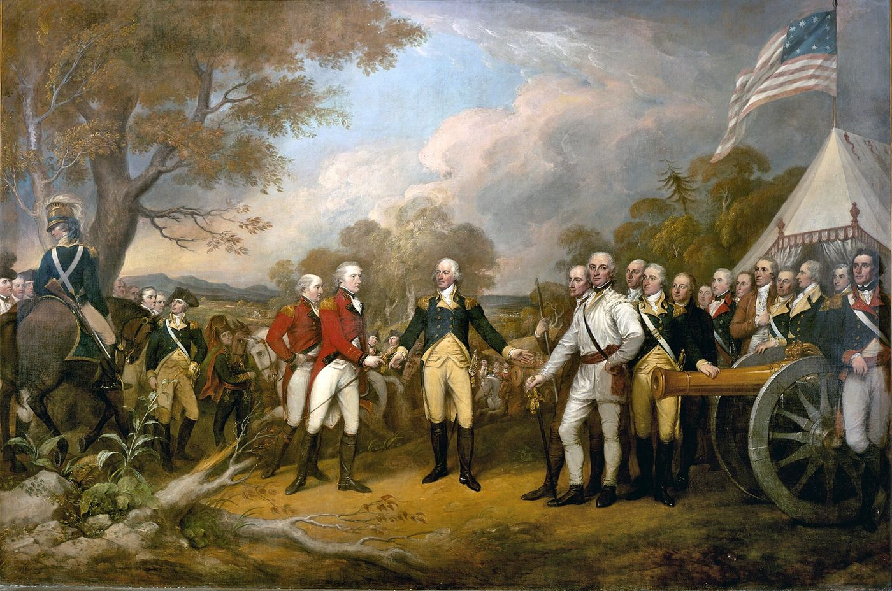

Biography
Rachel Tufts married Ebenezer Francis, and their son Ebenezer was born in Medford on December 22, 1743. The Massachusetts Magazine traced the son’s career: he lived in Medford until he came of age and then moved to Beverly; he marched as a lieutenant on the Lexington alarm, became a captain in Col. John Mansfield’s regiment, was commissioned colonel on July 28, 1776, and on January 1, 1777, became colonel of the 11th Regiment of the Massachusetts Line. He marched to Ticonderoga and was killed at Hubbardton on Monday, July 7, 1777. His regiment included Adam Tufts .
.
“Captain Ebenezer Francis of Beverly was the son of Ebenezer and Rachel (Tufts) Francis, and was born in Medford, December 22, 1743.”
The Massachusetts Magazine, vol. 6 (1913), p. 158. Internet Archive

CAPTAIN EBENEZER FRANCIS of Beverly was the son of Ebenezer and Rachel (Tufts) Francis, and was born in Medford, December 22, 1743. He lived in Medford until he became of age, when he removed to Beverly. On the Lexington alarm of April 19, 1775 he marched as Lieutenant in Captain Israel Hutchinson’s Company of Minute Men. April 1775 he was engaged as Captain in Colonel John Mansfield’s 7th Regiment, Provincial Army. July 28, 1776 he was commissioned Colonel of a regiment organized for the defense of Boston and was stationed at Dorchester Heights. January 1, 1777 he became Colonel of the 11th Regiment, Massachusetts Line, and marched to Ticonderoga. On Monday, July 7, 1777, he was killed at Hubbarton, near Whitehall, N. Y. In the journal of Captain Greenleaf, which volume is now preserved in the Massachusetts Historical Society Library, we read :
Transcription of the clipping above: The Massachusetts Magazine, vol. 6 (1913), p. 158. View the page scan

The same sketch, drawing on Usher’s History of Medford (pp. 179–180), tells how officers of Burgoyne’s army, quartered near Medford as prisoners, met the colonel’s widowed mother. Several told her they had seen her son after he was dead, and one of them, Captain Ferguson, gave back to her the colonel’s watch, which he had bought from a drum-boy. “Her profound gratitude and great grief deeply impressed them all” (The Massachusetts Magazine, vol. 6 (1913), p. 158. Internet Archive).
Service Record
Town: Medford, Mass. · Dates: [dates not in sources seen]
No service record applies to her. Her son’s service is summarised above.
Family Connection
Husband: Ebenezer Francis, who had died by 1777 (the sketch calls her “widowed”). Son: Col. Ebenezer Francis (1743–1777) of Beverly (The Massachusetts Magazine, vol. 6 (1913), p. 158. Internet Archive). Her own parents are not named in the source.
Relatives with profiles on this site: Adam Tufts, who served in her son’s regiment .
.
Spouse(s)
- Ebenezer Francis, father of Col. Ebenezer Francis. Marriage date not found.
Authoritative IDs / Index Numbers
| Source | ID / status |
|---|---|
| Perseus person index (auth=) | Note: Pending further work. |
| Find a Grave memorial | Note: Pending further work. |
| Brooks, History of Medford (1855) register no. | Note: Pending further work. |
| Mass. Soldiers and Sailors | Not yet checked for this page |
| DAR ancestor no. | Note: Pending further work. |
| FamilySearch ID | Note: Pending further work. |
| Geni profile | Note: Pending further work. |
| WikiTree ID | Note: Pending further work. |
| Town / vital records | Medford VRs not yet checked by volume and page |
Only IDs confirmed against dates and family are given as matches. “Not yet checked” means the source has not been searched; “Checked, not found” means it was searched without a match.
⚑ Unverified
Her parents and her dates of birth, marriage and death are not given in the source seen. The meeting with the British officers is told at second hand from Usher’s History of Medford, which has not yet been read for this page. Note: Pending further work.
Links and Resources
Every source, record, map, survey, marker and artifact tied to this person, gathered in one place. Page numbers are given where a book is cited.
Digitized Books and Journals
- The Massachusetts Magazine, vol. 6 (1913), p. 158. · Internet Archive